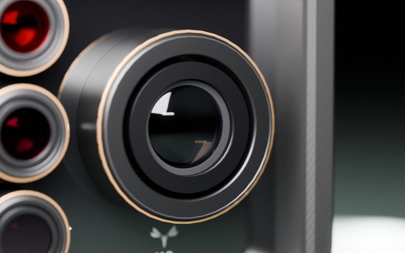
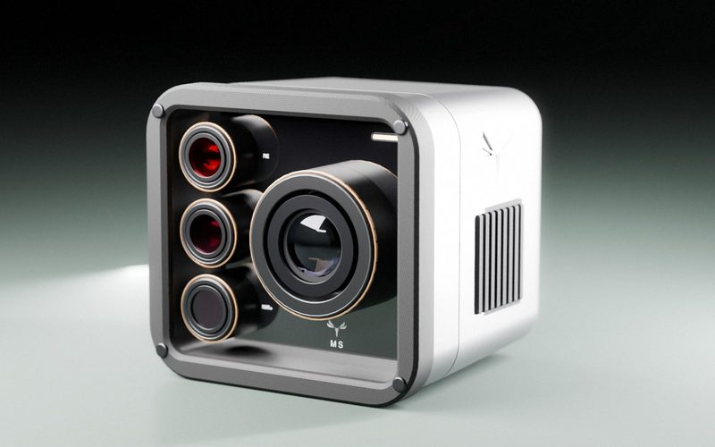
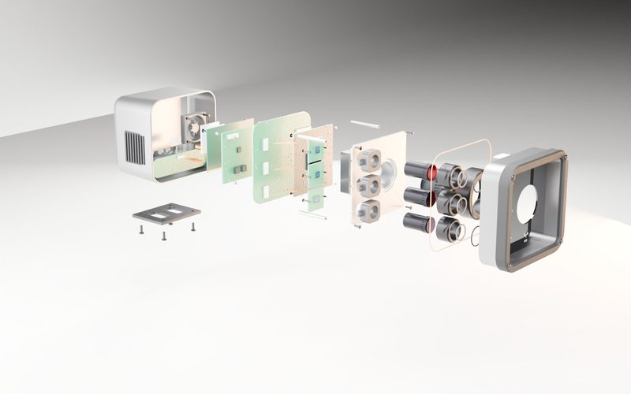

TEARDOWN
Four layers, front to back.
Scroll to take it apart. Each layer does one job, in the order light passes through it.
Six bands from one trigger. A Sony IMX565 on a C-mount lens for colour, three Mira220 sensors for red edge, NIR and extended NIR, and a Jetson that turns them into maps while the drone is still flying.

Scroll to take it apart. Each layer does one job, in the order light passes through it.
Behind a protective hood and black glass, every band gets its own lens and its own filter, all held on one aluminium plate.
The IMX565 and three Mira220 sensors sit on one baseboard that fires them on a single hardware edge.
A Jetson on a compact carrier builds indices and detections in flight. Heat pipes carry its heat to the rear.
A carbon-nylon shell with a finned heatsink and a 30 mm fan. At the back: XT30 power, GigE on a locking JST-GH, USB-C for setup and offload, a microSD slot for logs, GPS/PPS and the sun-sensor port.
MS is mounted fixed and nadir, lenses straight down. An open frame clamps the back of the body on four rubber isolators, leaving the fan and the I/O ports clear, so every band stays registered from flight to flight.
See what it finds on a real field.
See it in the field →Six band-pass filters from blue to near infrared, zoomed below. Stress pulls the red edge and NIR down first: the gap between the two leaves.
The hood stands proud of every lens, so a hard landing hits rubber, not glass.


